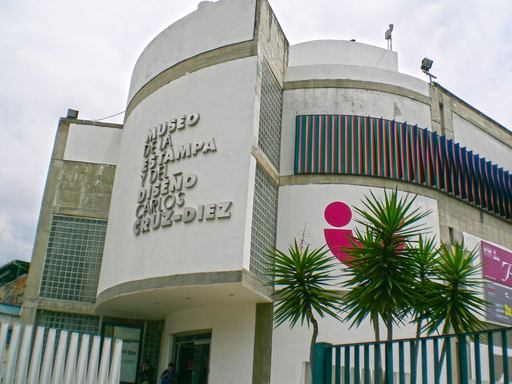
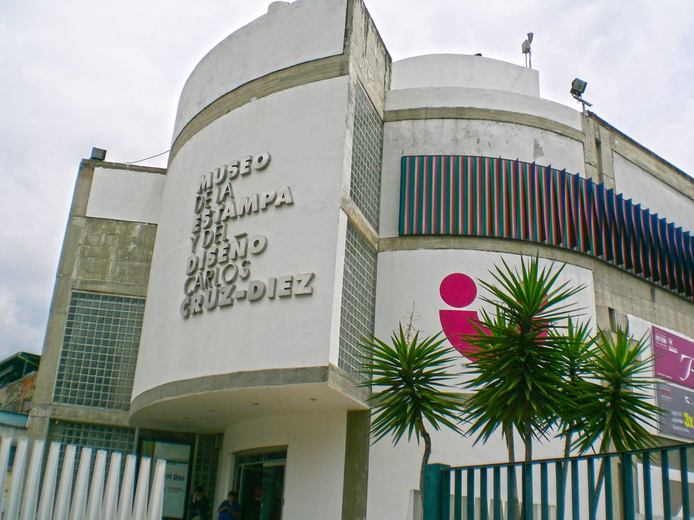
 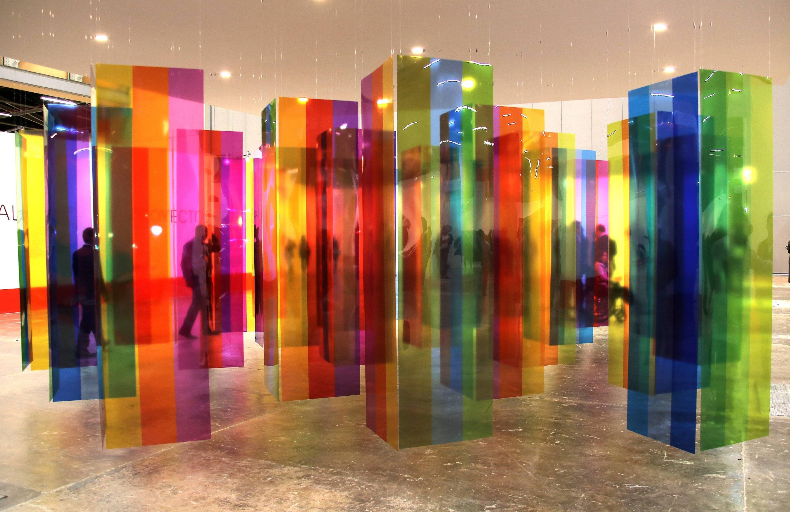
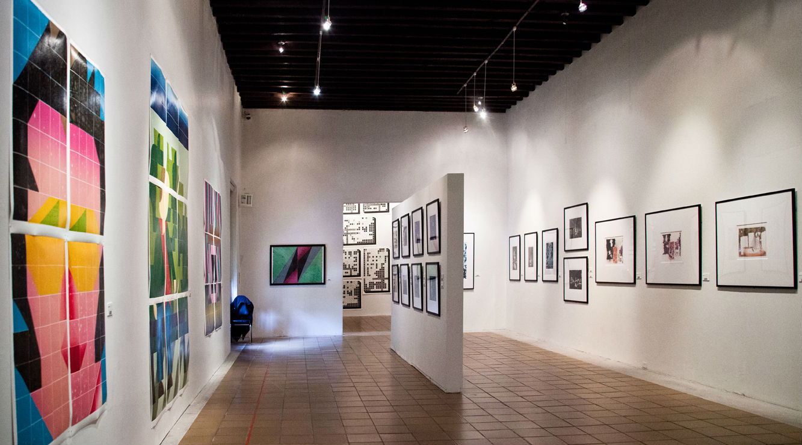
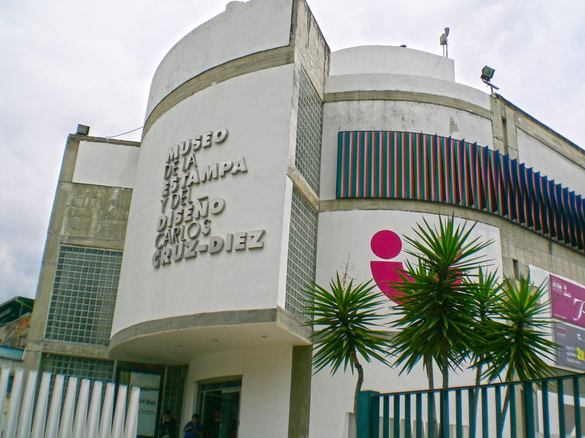
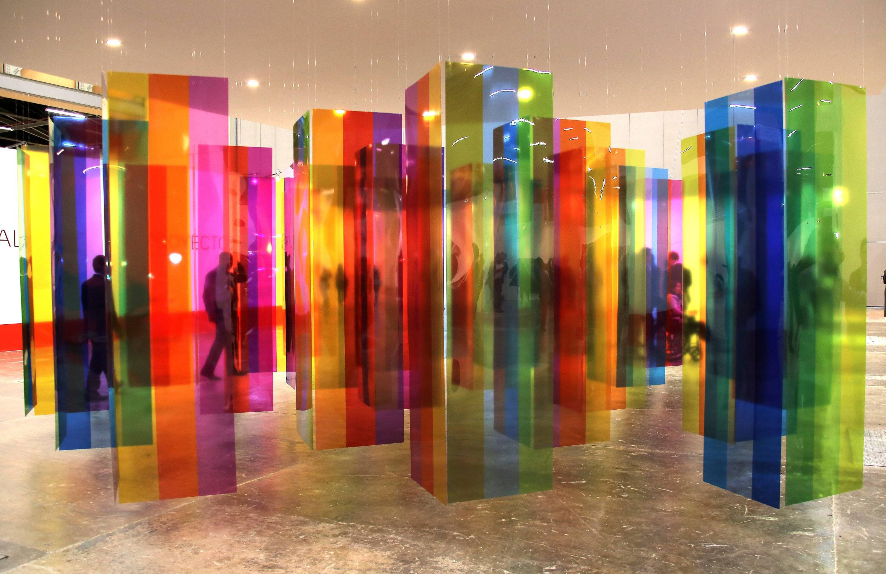
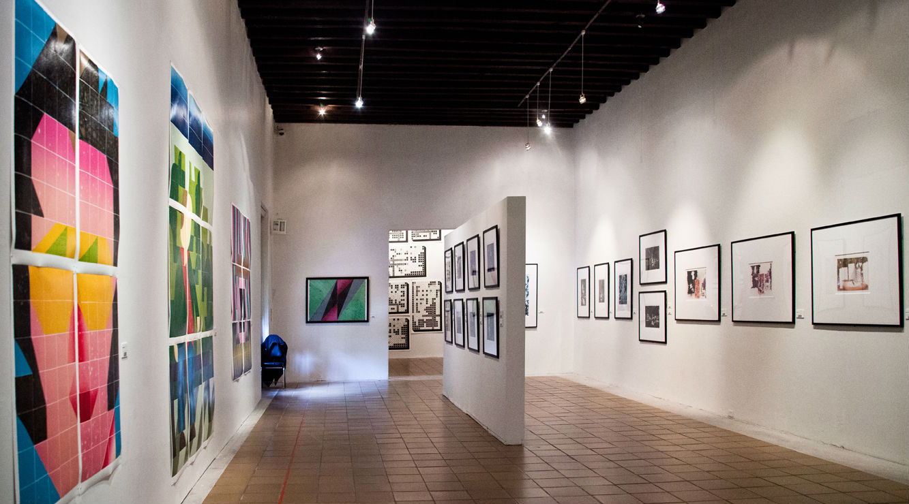
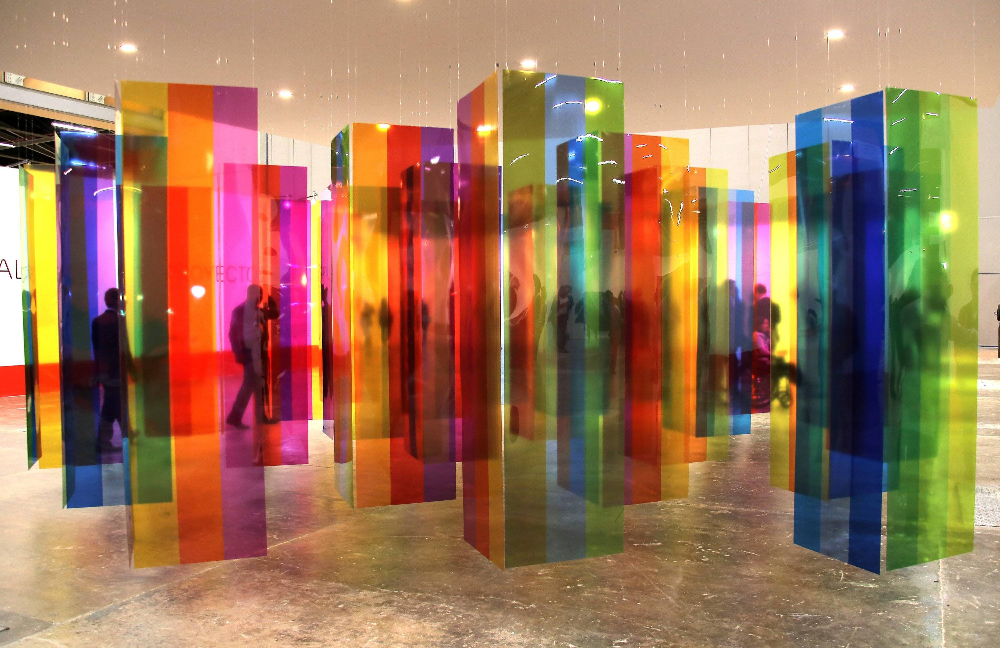
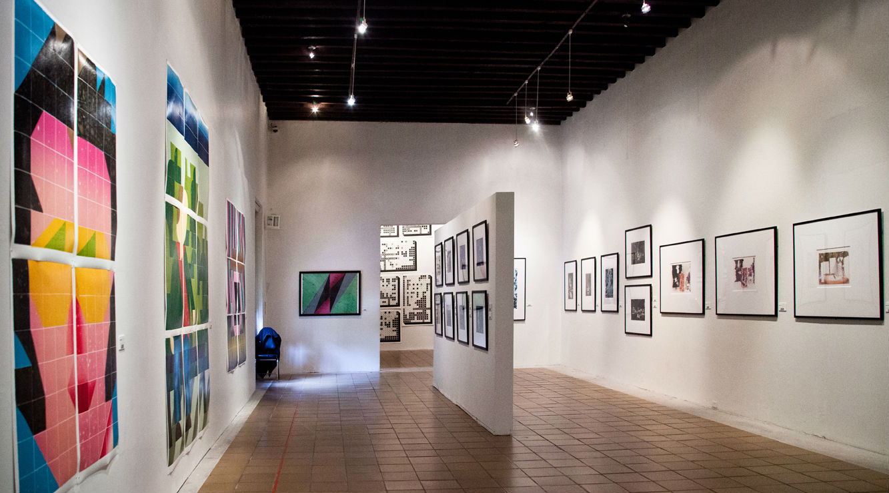
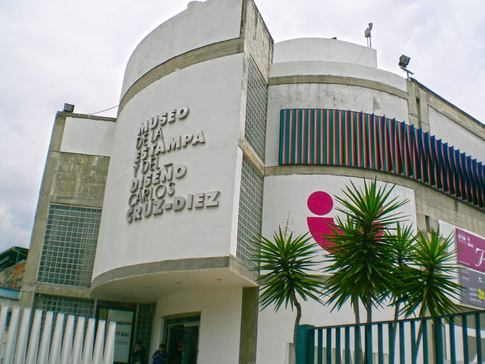
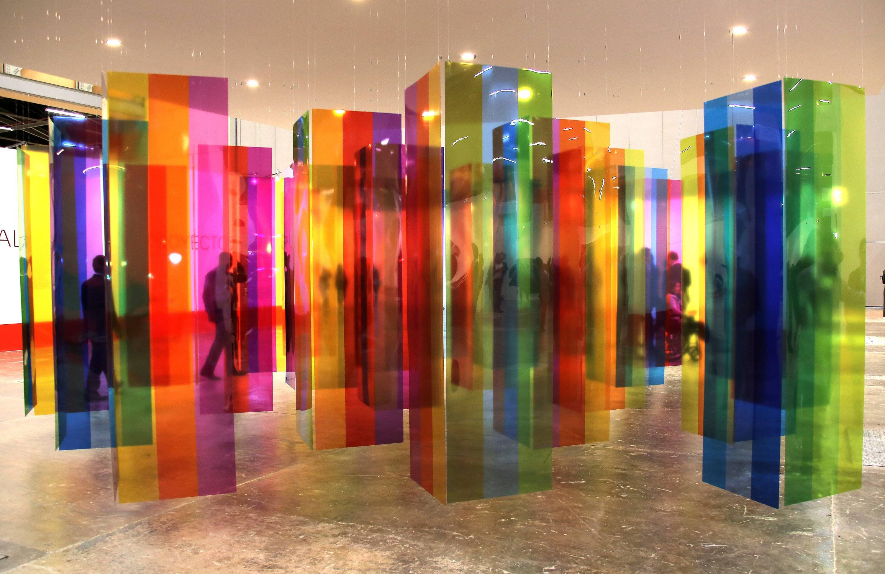
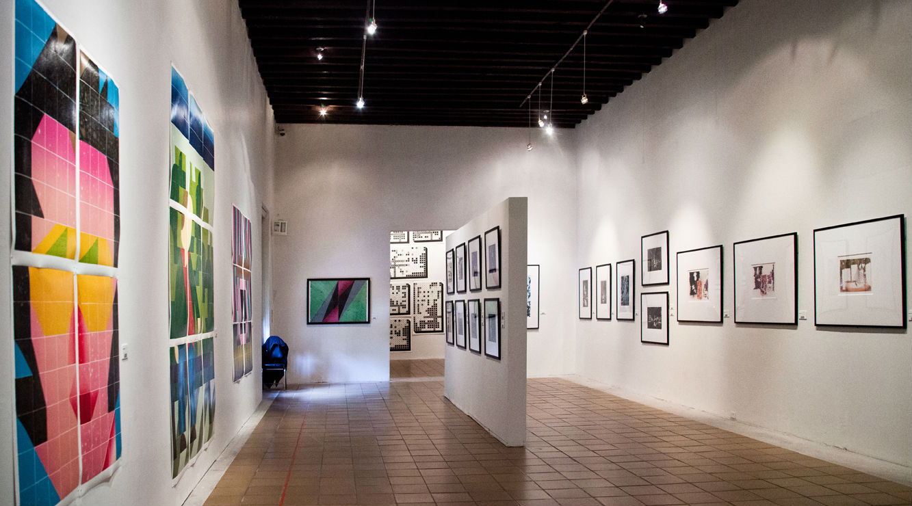
El Museo de la Estampa y del Diseño Carlos Cruz Diez o simplemente Cruz Diez, es un museo de Caracas, Venezuela ubicado en el Paseo Vargas de la avenida Bolívar en el centro de esa ciudad. Lleva su nombre en honor al artista venezolano Carlos Cruz Diez. Fue inaugurado en 1997 para exhibir obras de Cruz Diez y otros artistas modernistas. La edificación diseñada por el arquitecto Horacio Corser, tiene cuatro niveles en un área de 2.406 m². El museo cuenta con cerca de 2.500 piezas dedicadas al arte de la estampa y el diseño. Su acceso se puede hacer por medio del Metro de Caracas en por las estaciones Nuevo Circo o Parque Carabobo y por transporte público o particular a través de la avenida Bolívar.
Posiblemente lo más interesante del museo es esta cámara, en dónde uno se adentra dentro de la obra y la disfruta plenamente. Al salir de la cámara, tenemos una pared con una muestra de las obras urbanas de Carlos Cruz Diez en Venezuela. Es impresionante la cantidad de obras que podemos reconocer en todo el país y que por la prisa de la actividad cotidiana, no nos ponemos a contemplar, pero que si disfrutamos constantemente
En la planta baja, se presentan exposiciones temporales, que se renuevan periódicamente. En el piso superior, está la sala de exposición permanente "Atrapando el Color"
A continuación les presentamos algunas de las obras más interesantes: